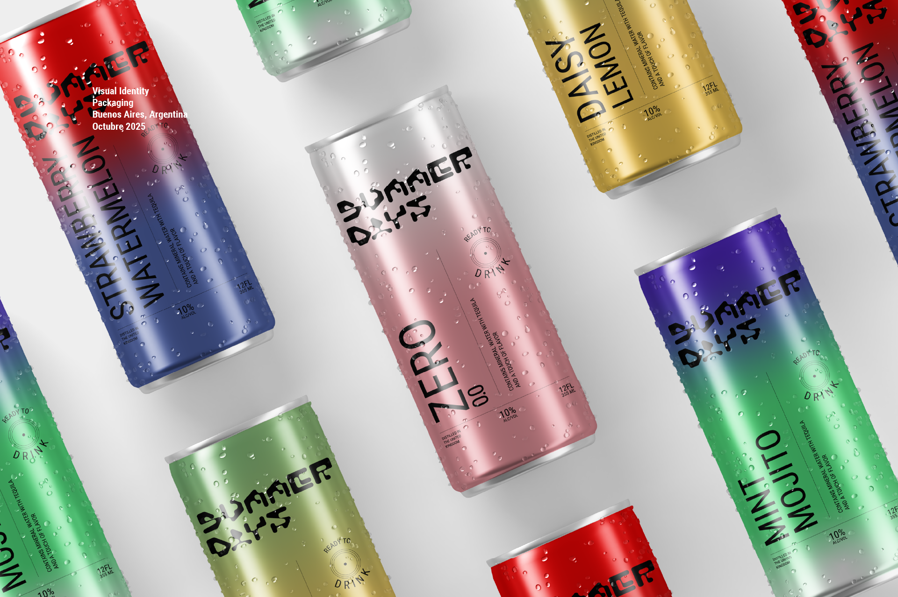
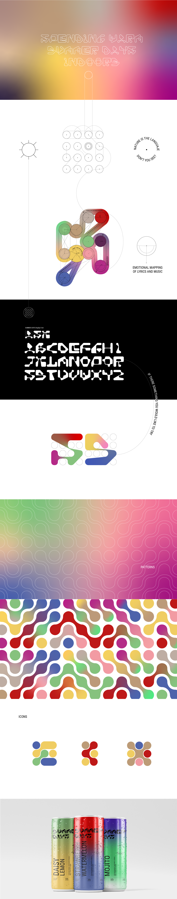

Diseño de identidad y packaging para bebida en lata sin alcohol Argentina 2025 Este proyecto se inspira en el single "Ask" de la banda inglesa The Smiths. Lanzado el 20 de Octubre de 1986 a través de Rough Trade Records. A partir de su universo emocional y su mensaje sobre la vulnerabilidad el deseo y la valentia de conectar, se desarrollo una identidad visual flexible que traduce esas sensasiones en un lenguaje contemporéneo aplicado al diseño que tiene como protagonista al circulo. El trabajo propone un recorrido atravez de las emociones presentes en la canción, reinterpretandolas visualmente.

